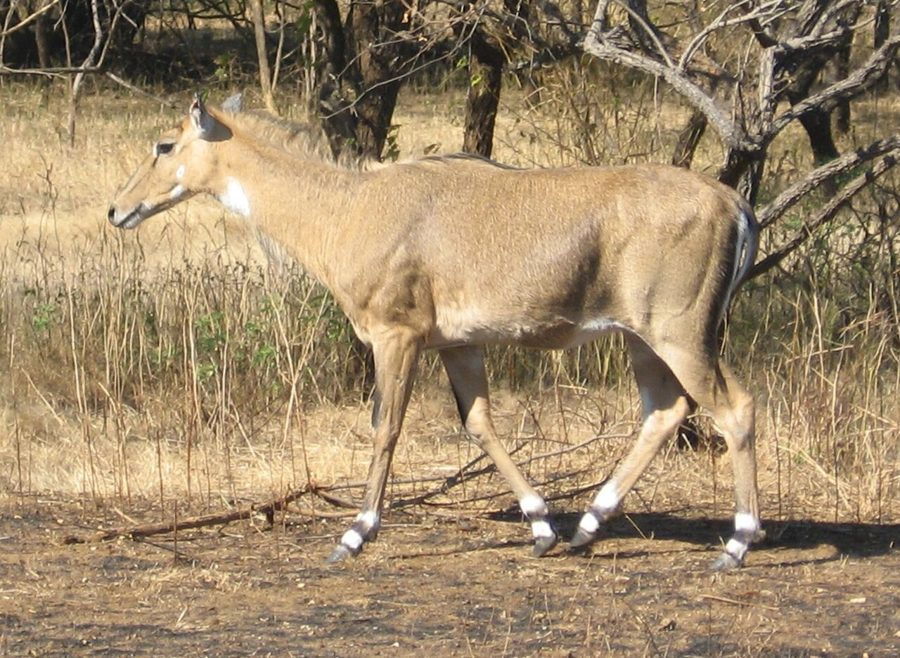

नीलगायNilgai
Boselaphus tragocamelus · Bovidae · MAM-0011

- Scientific name
- Boselaphus tragocamelus (Pallas, 1766)
- Family
- Bovidae
- Hindi
- नीलगाय
- Status here
- native
- IUCN
- LC
When to look कब देखें
Present all year.
नीलगाय / Nilgai
Boselaphus tragocamelus (Pallas, 1766) — Bovidae
नीलगाय (ब्लू बुल) — पूर्वी उत्तर प्रदेश के जंगलों, झाड़ियों और खेतों में पाया जाने वाला एशिया का सबसे बड़ा निवासी एंटीलोप (antelope) है। इसे स्थानीय बोलचाल में "घोसड़" या "वनरोज" भी कहा जाता है। नर नीलगाय का शरीर लोहे जैसे नीले-भूरे (blue-grey) रंग का होता है और उसके सिर पर छोटे, नुकीले सींग होते हैं, जबकि मादाएं हल्के भूरे (tawny-brown) रंग की और सींग रहित होती हैं। दोनों के गले पर सफेद रंग का एक धब्बा ("bib" spot) और पैरों पर सफेद निशान होते हैं। यह एक शाकाहारी जीव है जो सुबह और शाम के समय सक्रिय रहता है। पूर्वी उत्तर प्रदेश में यह फसलों, विशेष रूप से गेहूं और गन्ने को भारी नुकसान पहुँचाने वाला एक प्रमुख कृषि शत्रु (crop pest) माना जाता है। वन्यजीव (संरक्षण) अधिनियम, 1972 की अनुसूची III के तहत इसे कानूनी सुरक्षा प्राप्त है।
Quick Identification त्वरित पहचान
| Feature | Description |
|---|---|
| Size | Large, horse-like antelope; head-body length 180–210 cm; weight 120–240 kg |
| Male Colour | Dark blue-grey coat; sloping back with high shoulders; short black horns |
| Female Colour | Sandy-brown to tawny-brown coat; smaller than the male; completely hornless |
| Throat Mark | A prominent, bright white patch (white bib) on the middle of the throat |
| Throat Beard | Adult males feature a distinctive, hanging tuft of stiff black hair on the throat |
| Leg Markings | White rings on the fetlocks and two white spots on each cheek |
Field tip: Scan the edges of agricultural fields adjacent to scrub forests or riverbanks during dawn and dusk. Look for a large, horse-like antelope feeding on crops. Males are distinctive with their sloping backs, dark blue-grey coats, and short horns, while females are lighter sandy-brown.
Morphology आकारिकी
Biometrics (typical measurements for adult specimens in local river basins):
| Measurement | Range |
|---|---|
| Head-body length | 180–210 cm |
| Tail length | 45–53 cm |
| Weight | 120–240 kg |
Body details: The body is robust with a thin neck and long head. The shoulders are high and muscular, sloping down toward the lower rump. Males carry short, smooth, black, cone-like horns that are 15–24 cm long, slightly curved forward. Females are hornless. The coat is short and coarse. In mature males, the color is iron blue-grey, while females and young are sandy or tawny brown. Both sexes have a dark mane along the neck, two white spots on each cheek, a white throat bib, and white fetlock rings with dark tips.
Behaviour & Ecology व्यवहार और पारिस्थितिकी
Browser and dung-stacker.
- Social grouping: Females and young form small herds of 5–15 individuals. Young males form bachelor herds, while mature adult males are solitary, joining female herds only for breeding.
- Latrine habit: Habitually defecate in fixed locations, creating large dung heaps (latrines) in open grasslands or scrub. These serve as chemical markers for territory and tracking within the herd.
- Diurnal pattern: Actively browse in the early morning and late afternoon, resting in the shade of mango groves or tall grass during the hot midday hours.
Vocalisations
- Alarm signals: When sensing danger (such as humans or dogs), the Nilgai produces an explosive, loud, nasal snort (nasal snort) before running away, alerting the rest of the herd.
- Contact calls: Generally silent, but adult males and females make low, deep, guttural barking grunts (barking grunt) to maintain contact within dense vegetation.
Ecological Role पारिस्थितिक भूमिका
Large herbivorous browser.
- Vegetation impacts: Feeds on twigs, leaves, and fruits of deciduous trees, shaping the understory vegetation. High densities can restrict tree seedling survival through over-browsing.
- Seed dispersal: Aids in the dispersal of seeds of dry-zone trees (like Ziziphus and Acacianilotica) through its dung latrines.
Life Cycle / Phenology जीवन चक्र
- Breeding: Breeding occurs year-round, peaking between December and March. Males fight defensively by pushing foreheads and neck-wrestling.
- Gestation & birth: Gestation lasts approximately 8 months. Females give birth to twins (often single calves) in thick scrub. Calves can stand shortly after birth and remain hidden in dense grass for the first few weeks.
- Maturity: Young reach sexual maturity in 18–24 months.
Host Plants or Prey आहार
Herbivorous diet:
- Agricultural crops: Wheat (Triticum aestivum [FLR-0051 Wheat]), Sugarcane, pulses (chickpea, pigeon pea), and garden vegetables.
- Wild vegetation: Leaves and pods of Babool (Acacia nilotica), Ber (Ziziphus mauritiana), and fallen flowers of Mahua (Madhuca longifolia).
Predators / Natural Enemies शत्रु
- Calf predators: Packs of feral domestic dogs (Canis lupus familiaris) are the primary predators of young Nilgai calves in Basti agricultural plains.
- Historical predators: Tigers and leopards, which are now absent from the local agricultural plains of Basti.
Agricultural / Human Relevance कृषि प्रासंगिकता
Crop raiding and cultural protection.
- Agricultural damage: Nilgai herds raid wheat and sugarcane crops nightly, destroying fields by feeding and trampling, causing severe economic losses.
- Cultural protection: Despite the crop damage, rural Hindu farmers protect Nilgai from hunting due to its Hindi name containing "gai" (cow), associating it with the sacred cow.
- Crop defense: Farmers use barbed wire fencing, solar-powered electric fencing (jhatka taar), or keep night vigils using torches and firecrackers to drive them away.
Expected Locally स्थानीय रूप से अपेक्षित
Not a field record. Written from published accounts for eastern Uttar Pradesh. No confirmed local sighting yet — if you have seen it, that is what the atlas needs.
अभी तक स्थानीय पुष्टि नहीं। यह विवरण प्रकाशित स्रोतों से है, किसी अवलोकन से नहीं।
Commonly seen in the agricultural fields of Harraiya, Vikramjot, and Vikrampur blocks in Basti district, especially along the floodplain zones of the Ghaghra River. Herds often seek shelter in dry mango orchards (aam ke bagicha) during sunny afternoons.
Distribution वितरण
Global range: Endemic to the Indian Subcontinent, found across India, Nepal, and Pakistan. (An introduced population exists in Texas, USA).
In India: Widespread across the northern plains, central highlands, and western dry zones.
In Uttar Pradesh: Abundant resident across all plain districts.
In Basti district / eastern UP: Highly common in all rural, orchard, and riverbank blocks.
Research Questions शोध प्रश्न
Anyone can investigate these | कोई भी इन प्रश्नों की जाँच कर सकता है
- What is the seasonal preference of Nilgai for raiding wheat crops compared to sugarcane crops in Basti? / बस्ती में गन्ने की फसलों की तुलना में गेहूं की फसलों पर हमला करने के लिए नीलगाय की मौसमी प्राथमिकता क्या है? — Record nightly crop raids across different farm plots.
- Does the density of local feral dog packs regulate the survival rate of Nilgai calves in river-basin blocks? / क्या स्थानीय आवारा कुत्तों के झुंडों का घनत्व नदी-घाटी क्षेत्रों में नीलगाय के बच्चों की जीवित रहने की दर को नियंत्रित करता है? — Track calf survival in dog-dense vs. dog-free areas.
- What is the average distance between Nilgai dung latrines in open scrub lands? — Survey and map latrine distribution in a local scrub patch.
- How effective is solar fencing compared to traditional firecrackers in deterring Nilgai herds? — Monitor crop damage rates before and after fence installation.
- Can children count how many Nilgai they see in a single herd and note how many are blue-grey males versus brown females? — A simple observational census project.
Similar Species मिलती-जुलती प्रजातियाँ
| Species | Key Difference | हिंदी |
|---|---|---|
| Cervus unicolor (Sambar Deer) | Large deer; branched antlers in males; rounded ears; lacks the white throat bib and fetlock rings | सांबर हिरण — शाखायुक्त सींग, भूरा रंग |
| Bos indicus (Zebu Cow / Cattle) | Domestic cow; has a prominent shoulder hump; lacks the sloping back, short conical horns, and cheek spots | गाय — कूबड़, अलग सींग संरचना |
Field rule: Large size (horse-like), sloping back, white throat bib, and white leg rings; blue-grey coat with short horns in males, and sandy-brown coat without horns in females, identify the Nilgai.
Taxonomy & Classification वर्गीकरण
Original description. Peter Simon Pallas described the Nilgai as Antilope tragocamelus in 1766 in Miscellanea Zoologica (p. 4). The type locality was India. The genus name Boselaphus combines the Latin bos (ox) and the Greek elaphos (deer). The specific name tragocamelus combines the Greek tragos (he-goat) and kamelos (camel), describing its goat-like horns and camel-like sloping body.
Subspecies. Monotypic — no subspecies are currently recognized.
Family and order placement. Placed in the order Artiodactyla, suborder Ruminantia, family Bovidae, subfamily Bovinae.
Phylogenetic notes. Boselaphus tragocamelus is the sole surviving species of the tribe Boselaphini, representing an ancient lineage of bovine antelopes that diverged early from the main cattle ancestor group.
IUCN status rationale. Listed as Least Concern (LC) by the IUCN due to its wide range, large population size, adaptability to agricultural landscapes, and cultural protection in India.
Photo Gallery फोटो गैलरी
References संदर्भ
- Pallas, P. S. (1766). Miscellanea Zoologica, quibus novae imprimis atque obscurae animalium species describuntur et observationibus iconibusque illustrantur. Hagae Comitum: P. van Cleef, p. 4. [original description]
- Blanford, W. T. (1888). The Fauna of British India, including Ceylon and Burma. Mammalia. Taylor and Francis, London, p. 517.
- Prater, S. H. (1971). The Book of Indian Animals. Bombay Natural History Society, Bombay.
- Bagchi, S., et al. (2003). Herbivore density and distribution in dry deciduous forest of western India. Journal of Tropical Ecology, 19(4), 397-404.
- IUCN SSC Antelope Specialist Group (2024). Boselaphus tragocamelus. IUCN Red List of Threatened Species.
- GBIF Occurrence Data — Boselaphus tragocamelus, Uttar Pradesh (2010–2025).
Source file: species/fauna/mammals/nilgai.md